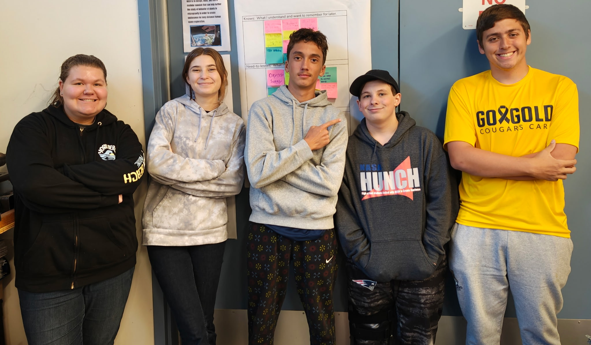
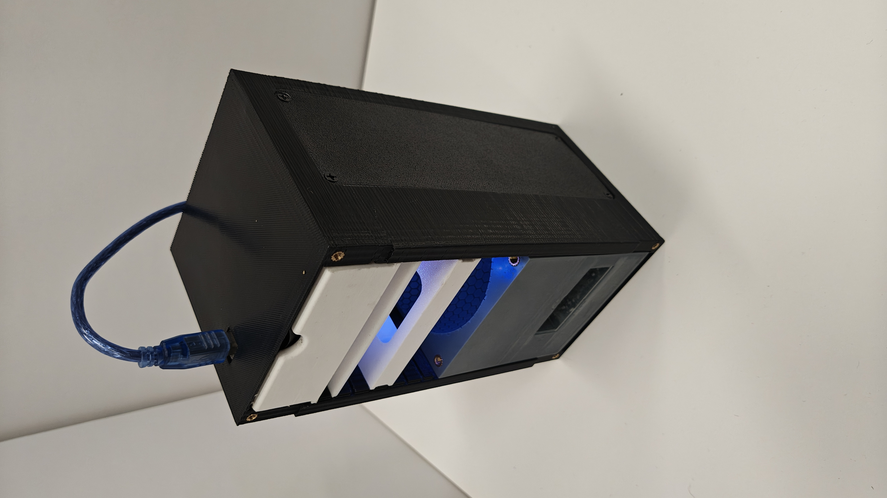
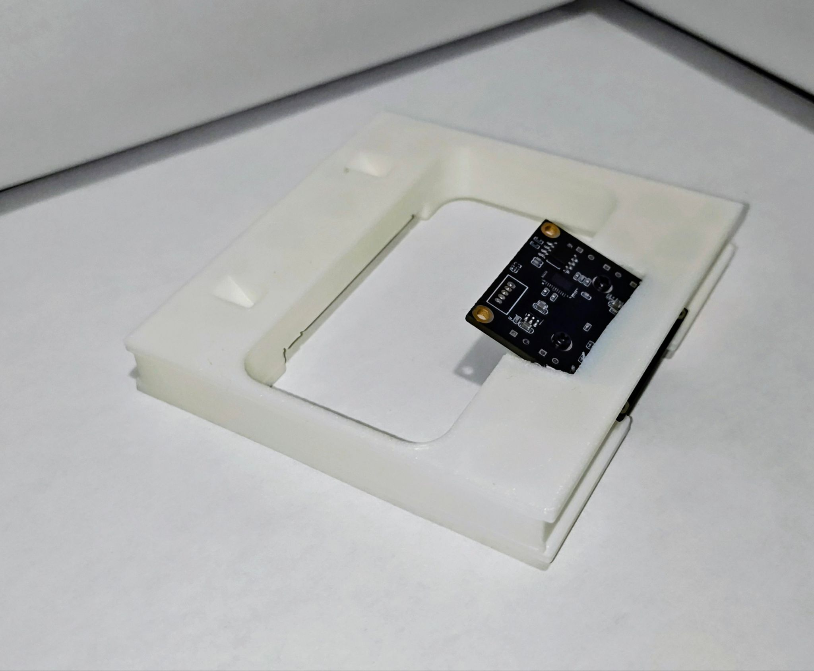
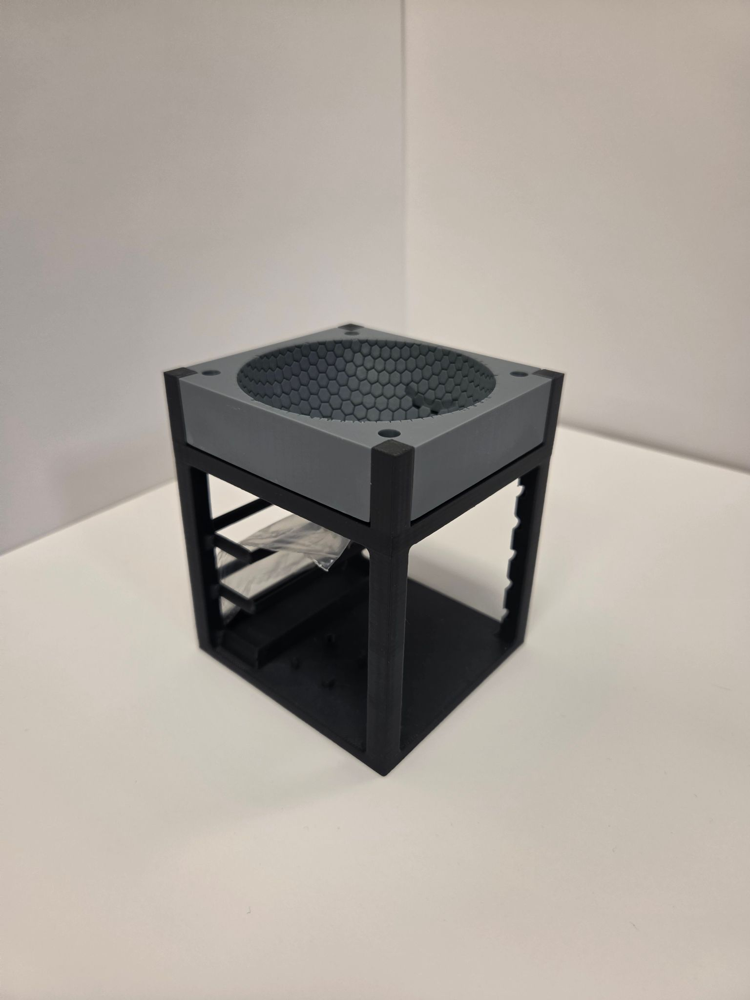
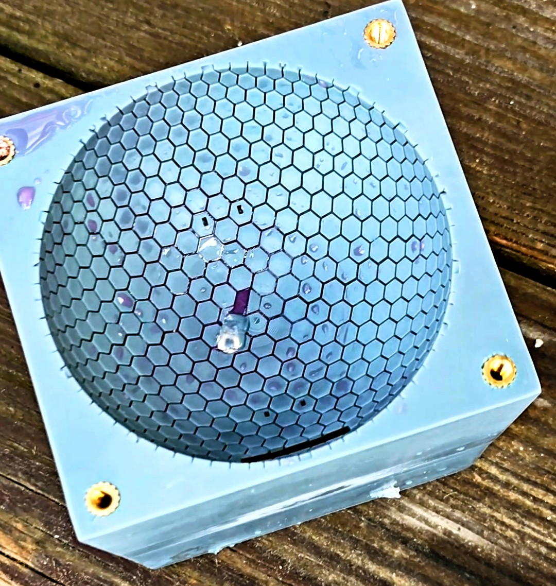

Tri-County RVTHS · NASA HUNCH · Franklin, Massachusetts
Growing plants in microgravity, the way a thorny devil drinks
Water that climbs in free-fall.
Hexagonal capillary channels copied from the thorny devil lizard, carrying water to plant roots where gravity can’t help. Nine free-fall drops, 14.7 mm of measured capillary movement, inside a 2U nanolab.
Aidan, Nate, Sabrina, Maddie and Lucas in the Tri-County engineering shop. Photo: HexaFlow team.
HexaFlow build log · Homepage 01 of 12
What is HexaFlow?
Led by Aidan, Project Manager & Hardware Lead
In the team’s words, from the project page
HexaFlow is a modular capillary action nanolab that uses AI vision and biomimicry to deliver water to plants. A five-member team from Tri-County RVTHS built it inside a 2U enclosure, on a $100 budget, to prevent root rot while enabling interchangeable experiments and rapid data collection. The system was tested in a 2.2-second free-fall window at NASA Glenn’s 2.2-Second Drop Tower in Ohio.
The hexagonal channels take their cue from the thorny devil lizard (Moloch horridus), which transports water through grooved skin by capillary action, no pump required. A vision model reads root moisture from the camera and drives the pump, closing a continuous feedback loop that prevents overwatering and root rot.
Manufacturing relies on SLA 3D printing in resin. Resin’s polar bonds grip water more tightly than water molecules grip each other, driving efficient capillary transport, strong enough that the system holds water even when inverted.
[Aidan: 1 to 2 sentences, in your words, about what you wanted this project to be]Note slot, to be written by Aidan| Constraint | Value |
|---|---|
| Form factor | 2U nanolab, 20×10×10 cm envelope |
| Power | 5 V USB-A |
| Budget | $100 |
| Water supply | Mechanical, no pumps-for-everything |
| Architecture | Modular, for interchangeable experiments |
A lattice that draws water upward
Led by Nate, Correspondent & Water Movement Lead
Channel width is 0.48 mm (a 0.020 in gap). A fully saturated lattice holds 10.12 mL. Every channel is SLA-printed resin. Scroll through Fig. 1 to watch the network drawn in, then filled from the water supply upward.
22 Oct 2025, from the design journey
Sabrina found the lizard on asknature.org. Nate prototyped the “Moloch Horridus Water System” in SolidWorks in two sizes. It worked “miraculously well,” so the team renamed the core the TDC, Thorny-Devil Capillary.
What we measured and built to
Led by Nate, Water Movement Lead
2.2s
NASA Glenn drop window
2.2-Second Drop Tower, Ohio
14.7mm
Mean capillary rise
9-drop Suite B, 14-ft rig
0.48mm
Channel width
0.020 in gap
10.12mL
Channel capacity
fully saturated
9drops
Free-fall drops
Suite B, 14-ft rig
The 2.2 s window is the NASA Glenn tower; the 14.7 mm mean comes from nine drops on the local 14-foot rig. Drop Testing at NASA Glenn keeps the two apart and shows the footage frame by frame.
Every channel is SLA-printed resin, 0.48 mm wide, holding 10.12 mL when saturated
Led by Aidan, Project Manager & Hardware Lead

The channels live in a 2U enclosure, 20×10×10 cm, shown exploded here and as printed below.
The exploded 3D model of every part now lives on The Nanolab page.
[Aidan: 1 to 2 sentences, in your words, about the hardest part to fit into the box]Note slot, to be written by Aidan [Maddie: 1 to 2 sentences, in your words, about making the shelf modular]Note slot, to be written by Maddie · Led by Maddie, Scheduler & Modularity Lead




Our team
Tri-County RVTHS · Franklin, Massachusetts
- AidanProject Manager & Hardware Lead[Aidan: 1 to 2 sentences, in your words, about the role you took on]Note slot
- NateCorrespondent & Water Movement Lead[Nate: 1 to 2 sentences, in your words, about writing to the experts and moving water]Note slot
- SabrinaNote Taker & Substrate Lead[Sabrina: 1 to 2 sentences, in your words, about choosing the substrates]Note slot
- MaddieScheduler & Modularity Lead[Maddie: 1 to 2 sentences, in your words, about keeping the build on schedule and modular]Note slot
- LucasWeb Development Lead[Lucas: 1 to 2 sentences, in your words, about building this site]Note slot



Watch water climb where gravity can’t.
Walk through every part of the nanolab in 3D, or open the source list behind every claim on this site.